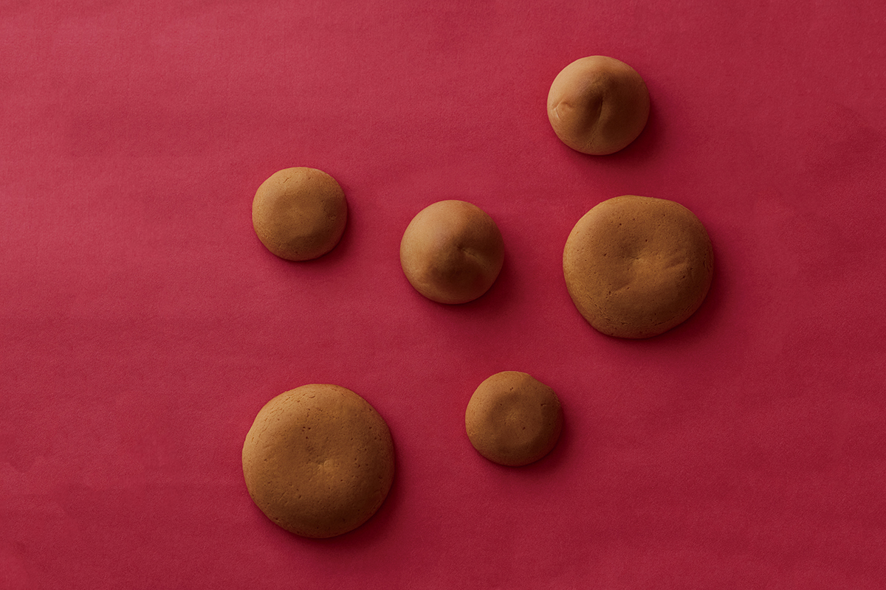
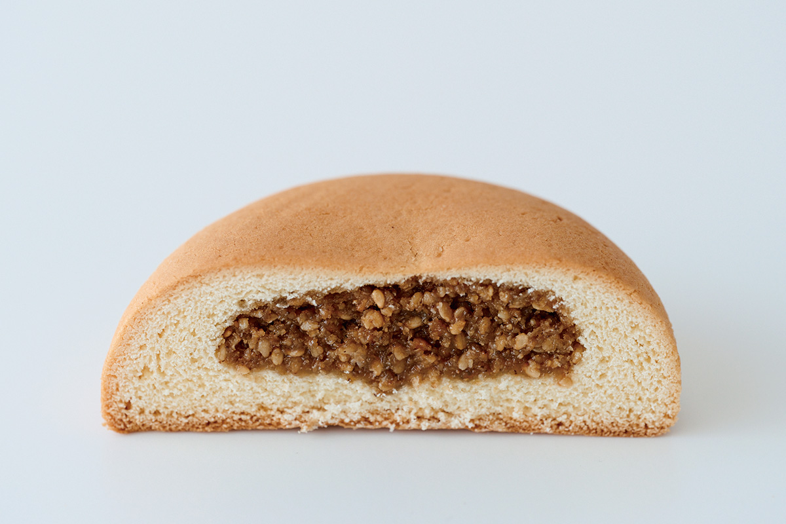
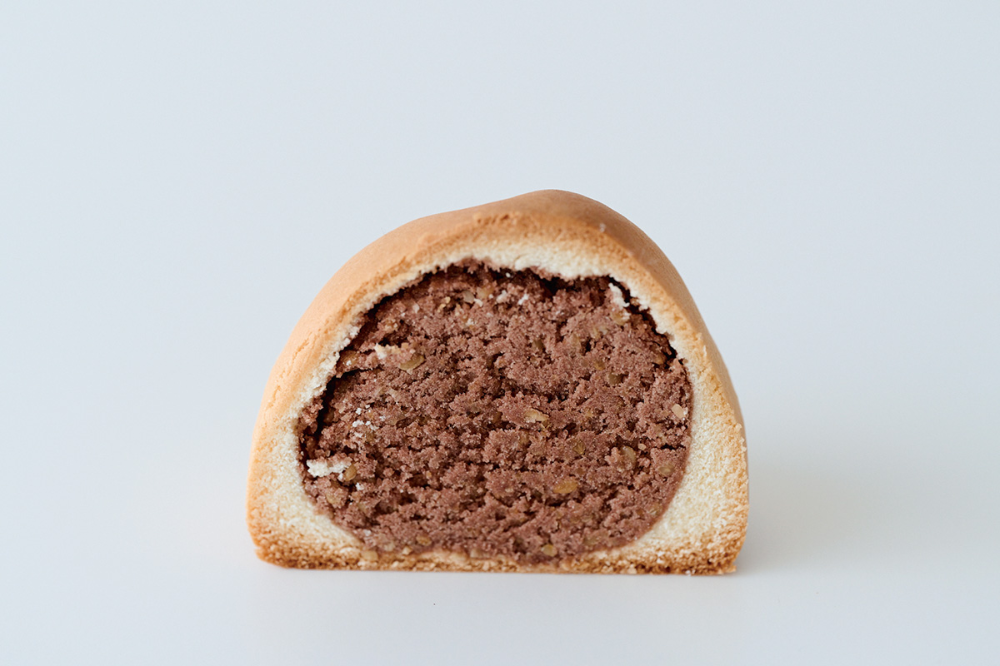
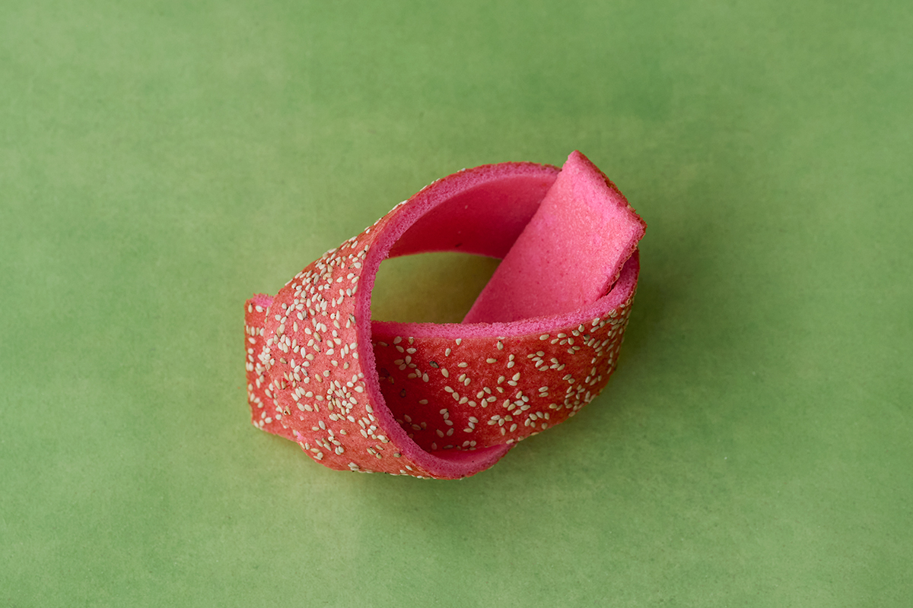
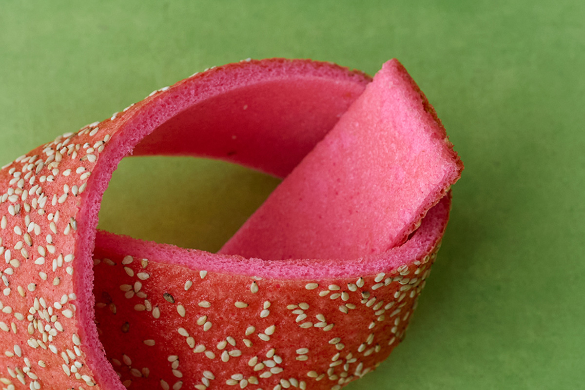
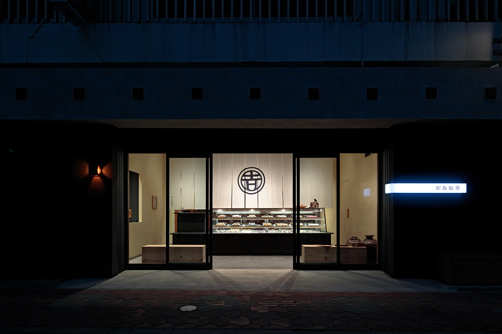

Префектура Окинава · Наха · сладости
Nantou Seika в Нахе: сладости, которыми угощали при дворе королевства Рюкю

На улице Укисима в Нахе работает старая кондитерская Nantou Seika. Здесь до сих пор пекут сладости, которыми королевство Рюкю угощало иностранных послов и знатных гостей.
Мингэй
Вкус королевского двора
В конце 1930-х годов на Окинаву приехал Мунэёси Янаги (1889–1961), философ и основатель движения мингэй, которое ценило красоту простых народных вещей. Здешние ремёсла поразили его так, что впоследствии он с большим чувством писал о них в очерке «Воспоминания об Окинаве». В его собрании много предметов времён королевства Рюкю, созданных до XIX века, и особенно впечатляют яркие наряды, окрашенные в технике бингата. Окинавские ремёсла заметно повлияли на всё движение мингэй.
А какие сладости ели при рюкюском дворе? Ответ можно найти в Nantou Seika, старой кондитерской, которая хранит вкус той самой придворной культуры, так восхищавшей Янаги. Во времена королевства Рюкю дорогим печеньем угощали иностранных гостей и знать. Это были плоские круглые «компэн» и конусообразные «момогаси».
Компэн
Печенье с кунжутом и чёрным сахаром

Считается, что компэн происходит от китайского печенья «кумпэн». Это традиционная выпечка с глубоким вкусом: в тесто из пшеничной муки заворачивают начинку из обжаренного белого кунжута, сахара и окинавского чёрного сахара.
У момогаси оболочка тоже из пшеничного теста, а внутри гладкая бобовая паста с кунжутом. Форму персика, по преданию, стали делать под влиянием Китая. Слово «персик» в Японии можно записать иероглифами со значением «сто и сто», и в эту сладость вкладывают пожелание, чтобы род, идущий от предков столетней давности, процветал и через сто лет. Обе сладости праздничные, их едят на торжествах по лунному календарю. Они влажные и ароматные, вкус получается очень тонким.

Мацукадзэ
Съедобное ремесло

Мацукадзэ из Nantou Seika можно назвать ремеслом, которое едят. На окинавском диалекте его называют «матикадзэ» или «матикадзи» и подают на праздниках в честь долголетия. Ленту теста завязывают «мусубикири», узлом, который не развязывают, и он означает прочный союз. Поэтому мацукадзэ вместе с сата-андаги, сладкими пончиками во фритюре, и солёной жареной лепёшкой «катахарамбу» горкой выкладывают на «юйно», церемонии обмена помолвочными дарами. Без этих трёх сладостей такая церемония не обходится.

Сладости под названием «мацукадзэ» есть и в других префектурах, но они совсем не похожи друг на друга. В Киото это бисквит с мисо, в Кумамото тонкое, около миллиметра, хрустящее печенье вроде тюиля. Общее у них одно: все посыпаны мелкими семенами. Окинавское мацукадзэ крупное и ярко-розовое, оно звонко хрустит и радует и глаз, и вкус.

Nantou Seika
- Адрес
- префектура Окинава, Наха, Мацуо, 2-11-28, улица Укисима
- Телефон
- +81 98-863-3717
- Часы работы
- 9:00–18:00, воскресенье 10:00–17:00
- Выходные
- нет
- Сайт
- nantou-seika.com
Фото: Вакана Баба.